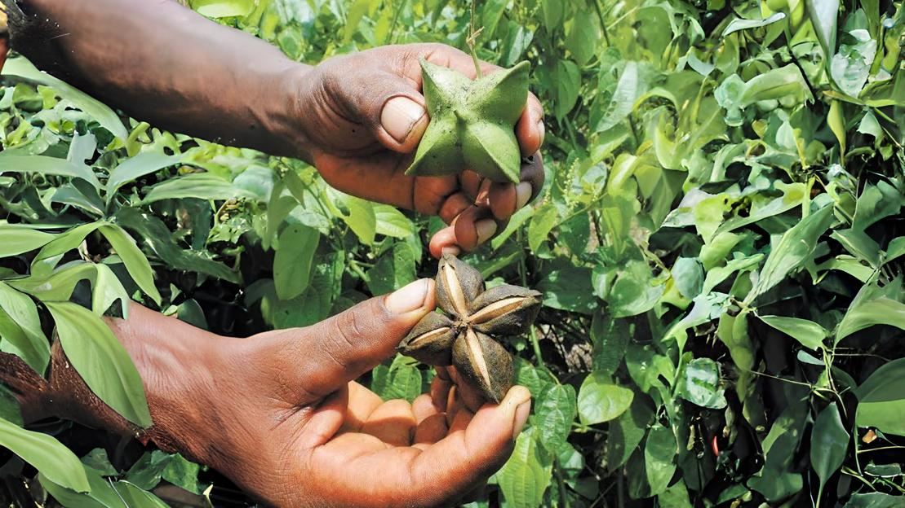

Learn More About Sacha Inchi
Discover the Amazonian seed that combines tradition, nutrition, and sustainability.

Discover the Amazonian seed that combines tradition, nutrition, and sustainability.
Sacha Inchi, often called the "Indigenous Peanut," has been a vital part of Amazonian culture for centuries. Indigenous communities in Ecuador, Colombia, and Peru have cultivated this remarkable seed, cherishing it for its health benefits and sustainability. With its star-shaped fruit and rich heritage, Sacha Inchi represents a deep connection between nature and tradition.
Sacha Inchi oil is the result of the cold pressing of Sacha Inchi raw seeds. It is a vegetable oil with a very high Omega 3, 6, and 9 content (up to 92%). No additives or preservatives are used. It also contains vitamin A, E, and tocopherols.
Sacha Inchi is a very promising plant. Its seeds have a very high nutritional quality due to their exceptionally high content of oil (35 to 45%), proteins (25%), and essential minerals such as calcium, magnesium, zinc, and potassium.
Rich in Omega-3s, 6s, and 9s: Supports heart health, reduces inflammation, and promotes brain function.
High Protein Content: A complete source of all nine essential amino acids, aiding muscle recovery and growth.
Antioxidants and Vitamin E: Protects cells, enhances skin health, and boosts immunity.
Fiber-Rich: Promotes gut health, supports digestion, and helps maintain a balanced microbiome.
| Oil | Omega 3 | Omega 6 | Total Polyunsaturated Fatty Acids |
|---|---|---|---|
| Sacha Inchi | 44.9 | 37.9 | 82.8 |
| Flax | 56.8 | 16.1 | 72.9 |
| Soy | 8.0 | 55.0 | 63.0 |
| Corn | 1.7 | 60.8 | 62.5 |
| Sunflower | 0.3 | 62.0 | 62.3 |
| Olive | 0.8 | 8.3 | 9.1 |
Percent of polyunsaturated fatty acid content
| Nuts & Seeds for Snacks | Omega 3 | Omega 6 | Total Polyunsaturated Fatty Acids |
|---|---|---|---|
| Sacha Inchi | 40.6 | 43.6 | 84.5 |
| Sunflower | 0.1 | 68.9 | 69.0 |
| Peanuts | 0.0 | 33.2 | 33.2 |
| Pistachios | 0.6 | 31.0 | 31.6 |
| Cashew | 0.4 | 17.3 | 17.7 |
| Macadamia | 0.0 | 1.8 | 1.8 |
Percent of polyunsaturated fatty acid content
| Nuts, Grains, and Oils | % Proteins |
|---|---|
| Peanuts | 25.8 |
| Sacha Inchi seeds | 24.7 |
| Sunflower seeds | 20.8 |
| Flax seeds | 18.3 |
| Sesame seeds | 17.3 |
| Olive oil | 0.0 |
Percent of Proteins content
Supporting Sacha Inchi means contributing to the preservation of the Amazon, a vital part of Earth's biosphere that regulates the planet's climate and houses unparalleled biodiversity. By choosing Sacha Inchi, you are empowering local communities through sustainable farming practices that harmonize with the delicate balance of the Amazon ecosystem.
This crop provides economic opportunities for indigenous farmers, enabling them to thrive while protecting their natural environment. Cultivating Sacha Inchi encourages agroforestry and reduces the need for deforestation, fostering a model where the health of the biosphere and human well-being are intrinsically connected.